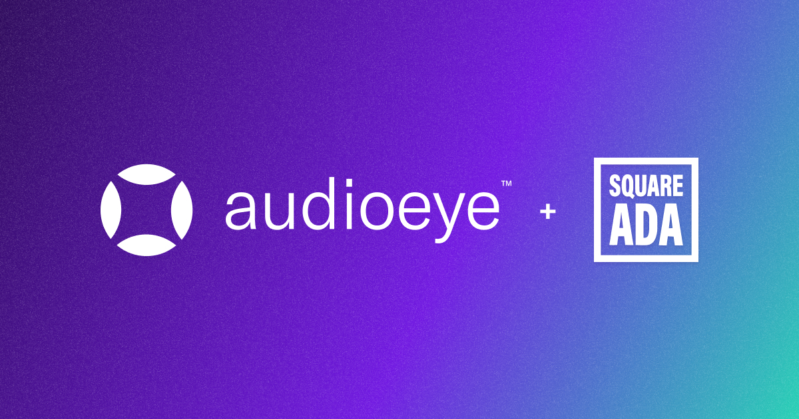

Last month Square ADA was acquired by a leader in the digital accessibility space, AudioEye. With our Squarespace expertise and AudioEye's innovative accessibility solutions, joining forces will provide an even better experience for both our clients and the visitors to their websites.
As we work to upgrade Square ADA’s clients to AudioEye’s platform, I want to share a bit about why I started Square ADA, how my thoughts on web accessibility have evolved, and why this change will better serve our clients.
The Why Behind Square ADA
I started Square ADA with the goal of making websites more accessible for people with disabilities, while also helping small business owners protect themselves from non-compliance lawsuits.
It all began when one of my freelance clients asked about making their Squarespace website ADA compliant. At the time, I couldn’t find a turnkey solution, so I dove into the technical standards and pioneered a new way of retrofitting Squarespace websites to make them more accessible. This manual remediation work continues to be a very time-consuming process that requires specialized knowledge and a whole lot of custom code.
How My Thoughts on Web Accessibility Have Evolved
Over the years, several competitors have popped up, claiming to do this work instantly using automated techniques that were difficult to validate. I’ve been critical of these fully automated approaches because they usually claim to make websites perfectly accessible, yet their products often deliver imperfect results.
But as Square ADA continued to grow, I knew that our service would never fully scale. Our custom-tailored solutions weren’t making a big enough dent toward the broader goal of web accessibility. Recognizing this bottleneck, I started to revisit the idea of accessibility automation. In that process, I realized my concern wasn't with automation itself, but with its lack of transparency. A company could claim their widget makes a website compliant, but how would the average layperson verify it provides a positive experience for end users?
In this, I realized that we needed a hybrid approach that combines the accuracy of manual remediation with the speed and scale of automation. I began to wonder, what if there was a tool that could instantly, accurately, and automatically fix most web accessibility issues, while also prompting manual intervention for the few issues that can’t be automatically fixed? And what if that tool was radically transparent, with detailed reporting and other resources that enable site owners to better manage their content and prevent compliance issues?
Then I found it in AudioEye.
AudioEye is a Game Changer
When I discovered AudioEye, I was delighted to learn how their values so closely align with what I’ve tried to build through Square ADA. AudioEye’s mission is to use technology to transparently eradicate every barrier to digital access. But unlike other widgets, plugins, or fully automated approaches, AudioEye’s solution recognizes the need for empathy and expertise that technology has not yet evolved into. It’s this combination that allows for the best of both worlds.
Quite simply, their solution is different from anything else I’ve encountered. It actually works. Here are five new features that excite me most about upgrading our clients to AudioEye:
1. Always-On Accessibility Audits
Instead of Square ADA's monthly reports, our clients will now have 24/7 access to a live accessibility dashboard! When AudioEye detects new accessibility errors, most issues are immediately fixed using 70+ automatic remediations.
2. Accessibility Recommendations
For any issues that can't be fixed automatically, AudioEye makes additional suggestions and provides training materials to guide manual remediation. This added transparency empowers site owners to better understand and manage their own content.
3. Visual Toolkit
AudioEye's Visual Toolkit allows users to change things like color contrast, cursor size, and font size so they can more easily use a website. While having a toolbar isn’t a compliance requirement, it’s been a commonly requested feature from Square ADA’s clients who want those additional features on their site to ensure a positive end user experience.
4. Improved Litigation Support
AudioEye's STAR Plan and Trusted Certification help prevent or address unwarranted legal threats by providing documented proof of web accessibility efforts. While it's impossible to prevent every complaint, these tools help website owners respond quickly and appropriately.
5. Optional Add-on Services
AudioEye offers broader support for all your web accessibility needs, including video captions and PDF remediations, which were previously outside the scope of Square ADA’s service.
Building this business has been incredibly rewarding, and I’m so proud of the work we’ve done. But ultimately, it doesn’t make sense for Square ADA to keep inching forward when a partnership with AudioEye will better serve our clients, more broadly reach the Squarespace community, and more quickly adapt to end users’ needs.
I started Square ADA with the simple goal of helping people. This move represents a new leap in that direction, and I couldn’t be more excited for the next chapter ahead!